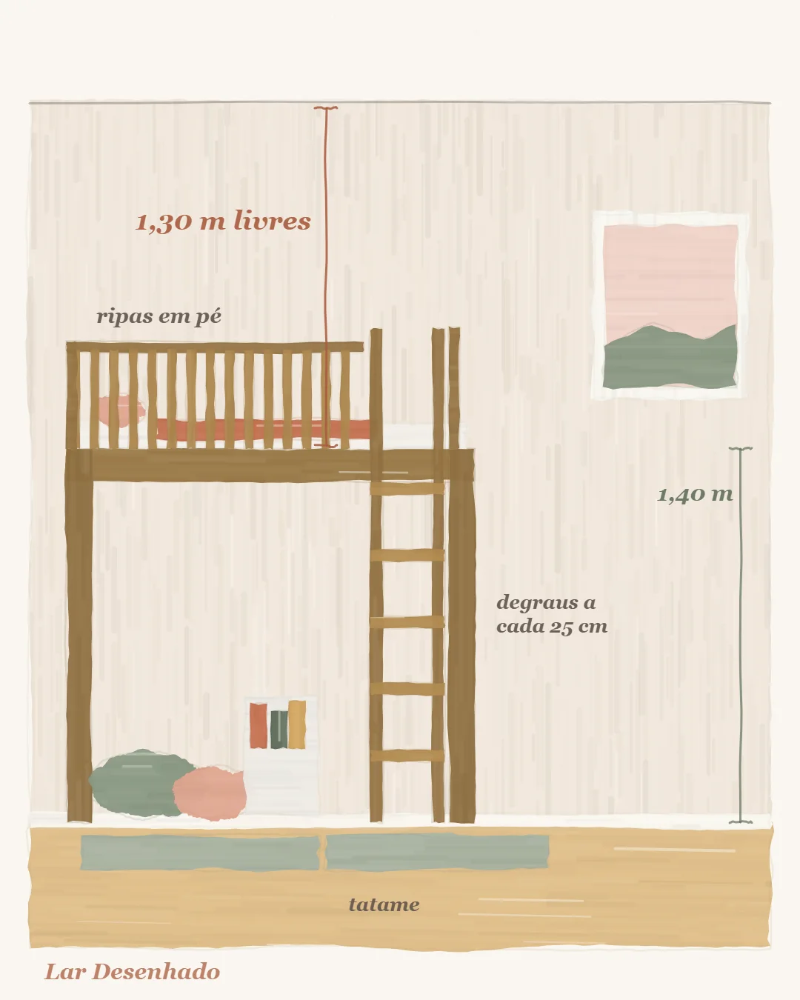

Medida que protege
Cama alta e mezanino: as medidas que deixam a brincadeira segura
Equipe Lar Desenhado · 13 de outubro de 2026

Se você está pensando em cama alta, beliche ou mezanino, comece por uma conta simples: o teto do quarto precisa ter pelo menos 2,40 m de altura, e cada vão do móvel tem uma medida mínima para ser confortável. Com essas medidas respeitadas, o resto é cuidado com a proteção, a escada e o chão. Vamos por partes, com calma.
Primeiro, a altura do teto
Os projetistas chamam de pé-direito a altura entre o piso e o teto. Para pensar em beliche ou mezanino infantil, o ponto de partida é 2,40 m. Abaixo disso, o quarto talvez peça outra solução, como uma cama mais baixa com gavetas.
Num teto de 2,40 m, o que baixa é a cama de baixo. Os vãos livres, que são o espaço para sentar, deitar e brincar, continuam com as mesmas medidas. Ou seja: teto baixo não é motivo para espremer o vão de quem vai usar.

As medidas de dentro
No mezanino, o recomendado é deixar 1,30 m livres em cima. É a altura em que uma criança de uns 7 ou 8 anos consegue ficar em pé. Se o seu mezanino tiver menos que isso, ele ainda funciona, mas ela vai usar sentada. Não é um problema, desde que a família saiba disso antes de construir.
No beliche, são duas medidas para guardar:
- entre a cama de baixo e a de cima, 75 cm no mínimo (é o que pede a norma brasileira de beliches e camas altas);
- livre acima da cama de cima, 92 cm no mínimo (referência de projeto, para sentar sem bater a cabeça).
A proteção: quanto ela precisa subir
Uma cama a partir de uns 80 cm do chão já é considerada cama alta e pede proteção em todo o lado aberto. Pela norma, a proteção sobe pelo menos 26 cm acima da base do colchão, que é o estrado. E o topo dela fica pelo menos 16 cm acima do topo do colchão.
Repare no que isso significa na prática: quanto mais grosso o colchão, menos proteção sobra. O colchão alto "come" a proteção. Por isso, confira a espessura do colchão antes de comprar, e não depois de montar.
Prefira ripas verticais. Barras deitadas, na horizontal, viram degrau, e o que era para proteger passa a convidar a subir.
As normas de beliche trazem o aviso de que a cama de cima não é indicada para crianças com menos de 6 anos. Muitos projetos resolvem assim: a criança pequena dorme embaixo, e o alto fica para brincar, ler e receber os amigos.
Escada e chegada lá em cima
Na escada vertical, do tipo marinheiro, o espaço entre um degrau e outro é de 25 cm, com 5 cm a mais ou a menos de tolerância. Cada degrau tem pelo menos 14 cm de profundidade, para o pé apoiar de verdade. Na escada inclinada, o corrimão fica entre 60 e 85 cm de altura.
Um detalhe pequeno que muda tudo: uma alça para a mão na chegada, lá em cima. Sem ela, a criança puxa o lençol para subir, e o lençol sai na mão.
O chão embaixo também faz parte
A norma de playgrounds, usada aqui como referência, trata de queda: do ponto mais alto de onde a criança pode cair, acima de 60 cm, o chão pede uma superfície que amortece, como tatame, EVA ou colchonete, e nada duro por perto. A altura de queda livre vai no máximo a 1,50 m.
Pense em muita gente em cima
Amigos sobem, adultos sobem para ajudar. Planeje a estrutura pensando em várias pessoas ao mesmo tempo, não só na criança. Quem executa responde pela estrutura, por isso peça ao marceneiro ou ao serralheiro, por escrito, o peso que o mezanino aguenta.
Cama alta segura é feita de medidas combinadas: altura do teto, vão livre, proteção, escada e chão que amortece.
O que levar para o marceneiro
- a altura do teto, medida em mais de um ponto do quarto;
- a espessura do colchão que será usado;
- a idade da criança hoje e o que a família espera dela daqui a dois ou três anos;
- proteção com ripas verticais em todo o lado aberto;
- tipo de escada e corrimão, e a alça para a mão lá em cima;
- o peso que a estrutura aguenta, por escrito;
- o piso que amortece embaixo, quando a queda for possível.
Leia também
- O quarto que cresce: como planejar hoje pensando na próxima fase
- Como escolher as cores do quarto infantil sem errar
- Quarto infantil pequeno: o segredo é deixar o meio livre
Fontes
- ABNT NBR 15996-1 — Móveis: beliches e camas altas
- ABNT NBR 16071-2 — Playgrounds (usada como referência para alturas de queda)
- Recomendações de projeto de escritórios especializados em quarto infantil